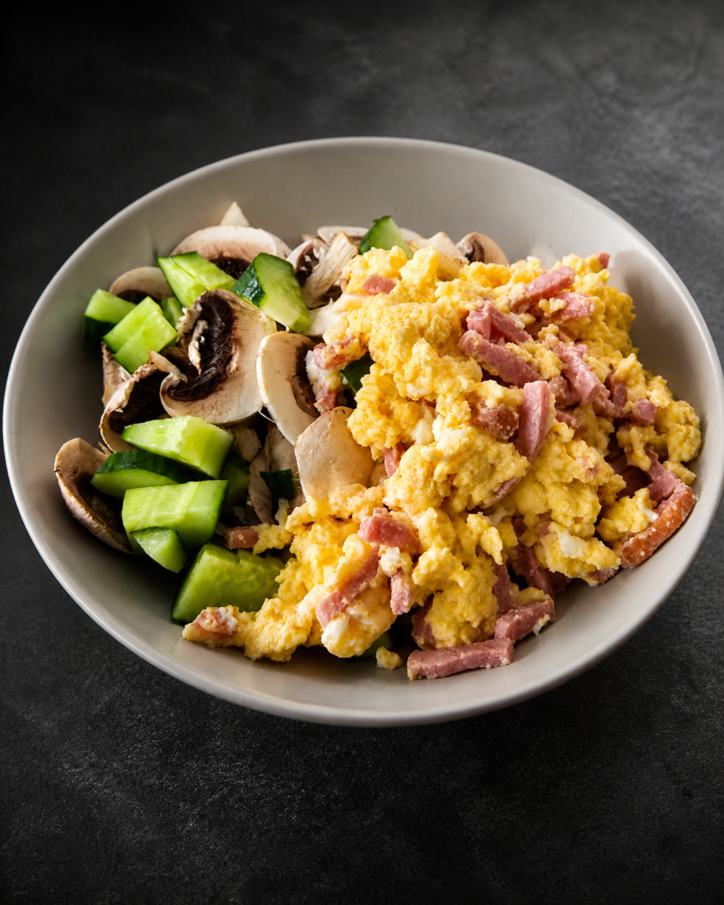

Omelette aux champignons et concombre

Ingrédients
- 4 œufs entiers
- 100g d’allumettes de bacon allégées
- 150g de champignons
- 150g de concombre
Préparation
Astuce : pour les œufs, je mets un fond d’eau léger dans la casserole, je fais bouillir, puis je baisse le feu avant d’y mettre les œufs. Je touille en continu : au début ça peut sembler raté, mais au bout de quelques minutes on obtient une omelette bien volumineuse, type hôtels du matin.
- Battre les 4 œufs dans un bol
- Faire cuire les œufs battus avec les 100g d’allumettes de bacon allégées à la poêle
- Ajouter ensuite les 150g de champignons
- Couper le concombre en morceaux ou en rondelles et l’ajouter à la fin de la cuisson
- Servir l’omelette chaude au midi
Valeurs nutritionnelles (approx.)
Par portion : 478 kcal • 52 g protéines • 25 g lipides • 8 g glucides • 4 g fibres